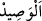
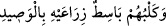

Allah’ın kendilerini meşâyıh vâsıtasıyla terbiye ettiği mürîde gelince belki de kırk
günlük bir, iki veya birkaç halvette ricâl mertebesine ulaşır. Çünkü onlar meşâyıh
vâsıtasıyla Allah’ın halifeleri ve lütfunun sûretleridir. Nitekim dağlardaki ağaçlar
vâsıtasız/bakıcısız olarak gelişirler, ama sürekli ve düzenli bir bakımla gelişen
bahçelerdeki ağaçlar gibi meyve vermezler.
Ey dost benim bu öğüdümü kabul et
Git bir devlet sâhibinin terkisini tut
Ki sedefe bir yağmur damlası gelmezse
İncinin cevheri parlak ve ziyâdâr olmaz
“Köpekleri de mağaranın girişinde ön ayaklarını uzatmış yatmakta idi.” Burada
sözü edilen, onların dinine tâbi olan çobanın köpeğidir. Adı da Kıtmîr idi.
“ el-Vasîd” mağaranın kapısının bulunduğu yerdir. el-Kâmûs’ta şöyle der: “el-
vasîd” avlu, eşik demektir.” Süddî şöyle demiştir: “Mağaranın kapısı ya da eşiği olmaz.
Burada kasdedilen köpeğin mağarada evin eşiği yerinde olan bir yerde olduğudur.
Mukâtil’in dediğine göre mü’minlerle beraber cennete on hayvan girecektir:
1. Sâlih (a.s.)’ın devesi,
2. İbrahim (a.s.)’ın buzağısı,
3. İsmail (a.s.)’ın koçu,
4. Mûsâ (a.s.)’ın ineği,
5. Yûnus (a.s.)’ın balığı,
6. Üzeyr (a.s.)’ın eşeği,
7. Süleyman (a.s.)’ın karıncası,
8. Belkıs’ın kuşu (Hüdhüd),
9. Ashâb-ı Kehf’in köpeği (Kıtmîr)
10. Muhammed (a.s.)’ın devesi. Bunların hepsi koç sûretinde yaratılacak ve cennete
gireceklerdir. Mişkâtü’l-envâr’da böyle geçmektedir.
Şeyh Sa‘dî (k.s.) der ki:
Ashâb-ı Kehf ’in köpeği bir zaman
İnsanların peşinde dolaştı, onlardan oldu
Yâni koç sûretinde insanlarla birlikte cennete girecektir. İmam Sa‘lebî’nin tefsîrinde
şöyle zikredilir: “Kim gece gündüz Nuh (a.s.)’a salât ve selâm gönderirse akrebden ona
zarar erişmez. Kim de;
“”
“Ve kelbühüm bâsitun zirâayhi bi’l-vâsîd” âyetini yazıp üzerinde taşırsa ona
köpekten zarar gelmez.”
Hayâtü’l-hayevân’da şöyle der: “Müfessirlerin çoğuna göre Ashâb-ı Kehf’in köpeği